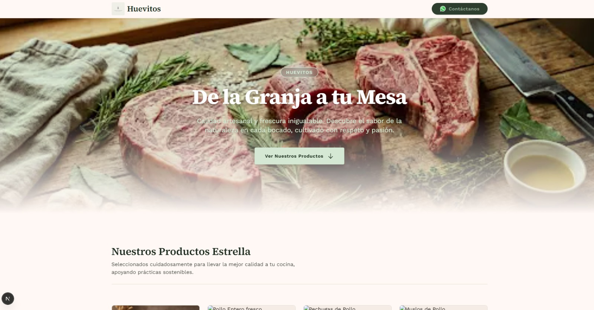
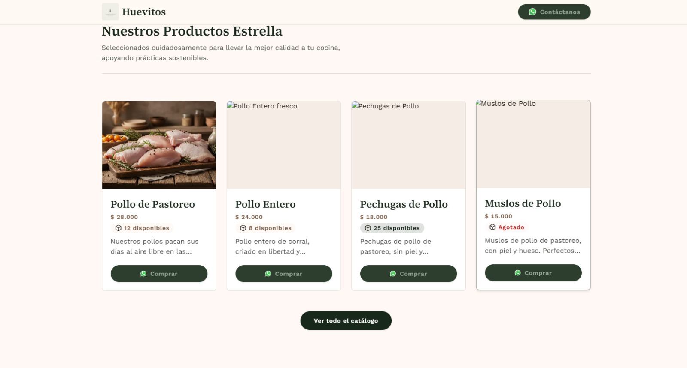
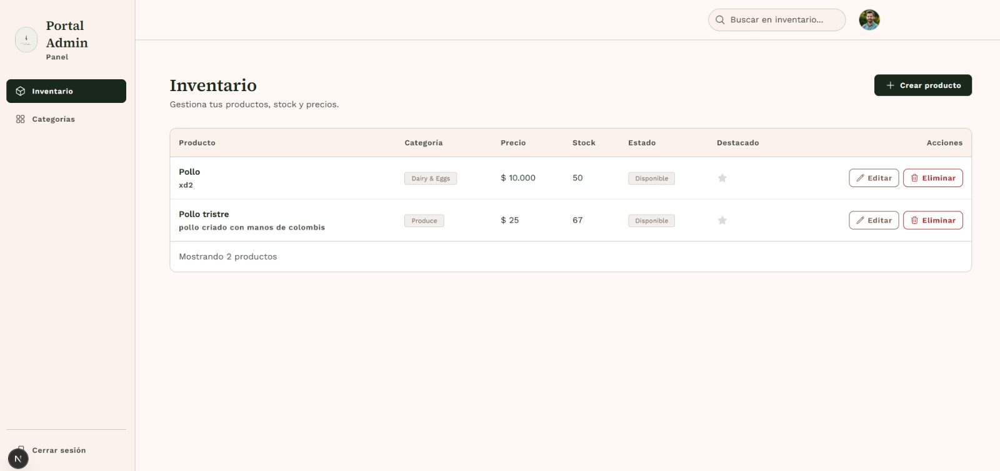
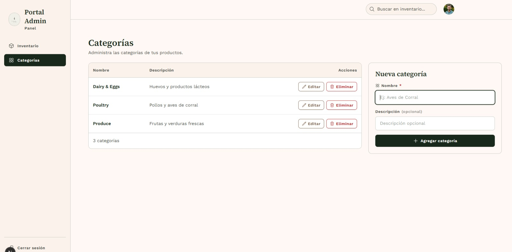

Ingeniero de Sistemas
Soy Ingeniero de Sistemas con experiencia construyendo aplicaciones backend, frontend y sistemas completos de gestión. Me interesa el desarrollo de software robusto y bien documentado, y disfruto trabajar en proyectos que resuelven problemas reales, desde sistemas de salud hasta plataformas de e-commerce.
Sistema completo para la gestión de hospitales, compuesto por tres módulos: servidor backend (Java), aplicación web (TypeScript) y aplicación de escritorio (Java).
Ver organización en GitHubBackend para un sistema de gestión de clínicas veterinarias, desarrollado con TypeScript, containerizado con Docker y desplegado sobre Kubernetes. Incluye módulos de auditoría, servicios core y documentación técnica.
Ver en GitHubPlataforma de catálogo de productos para una empresa de venta de carnes y huevos. Incluye una vista pública para clientes (catálogo, precios, contacto por WhatsApp) y un panel de administración con gestión de inventario y categorías. Desarrollado con Next.js y TypeScript, desplegado en Vercel.




API para la reserva y gestión de espacios deportivos, desarrollada con NestJS y TypeScript, incluyendo autenticación con servicio de correo integrado.
Ver en GitHub